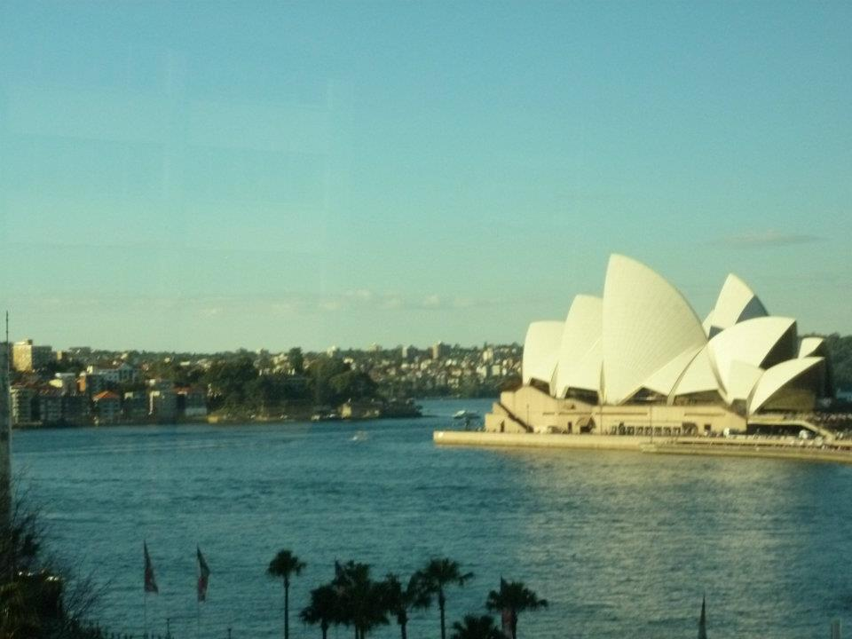
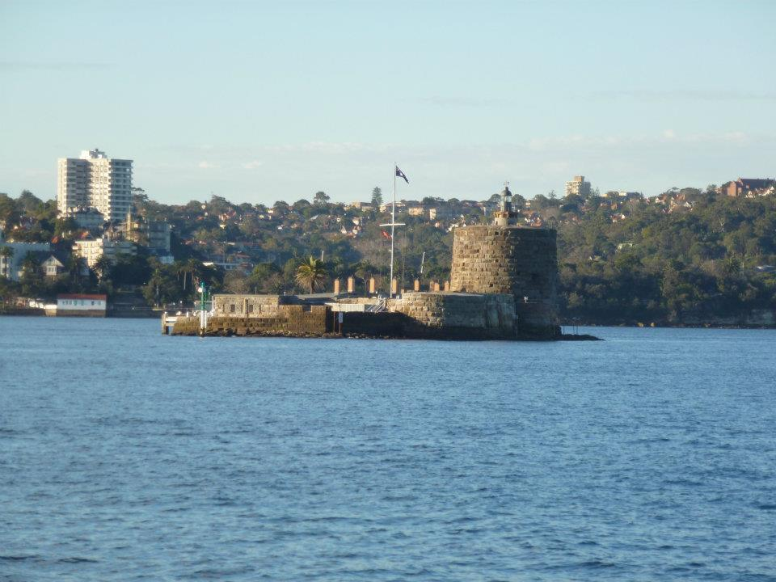
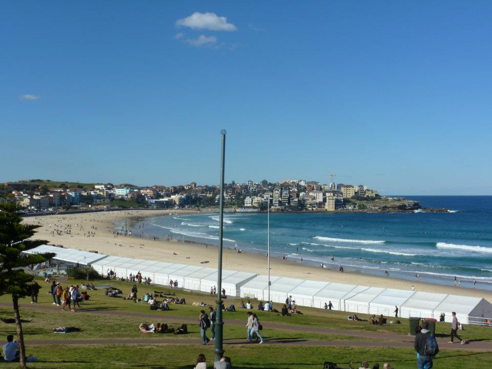
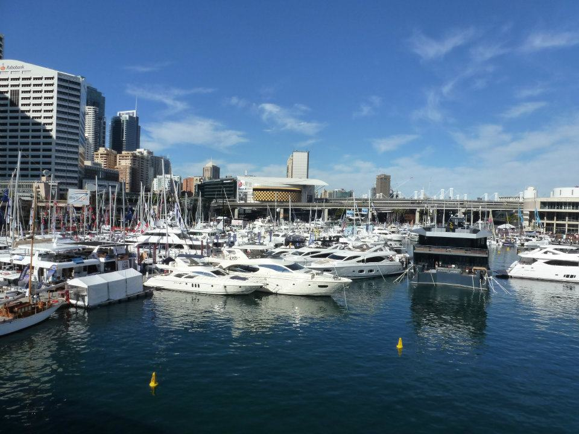
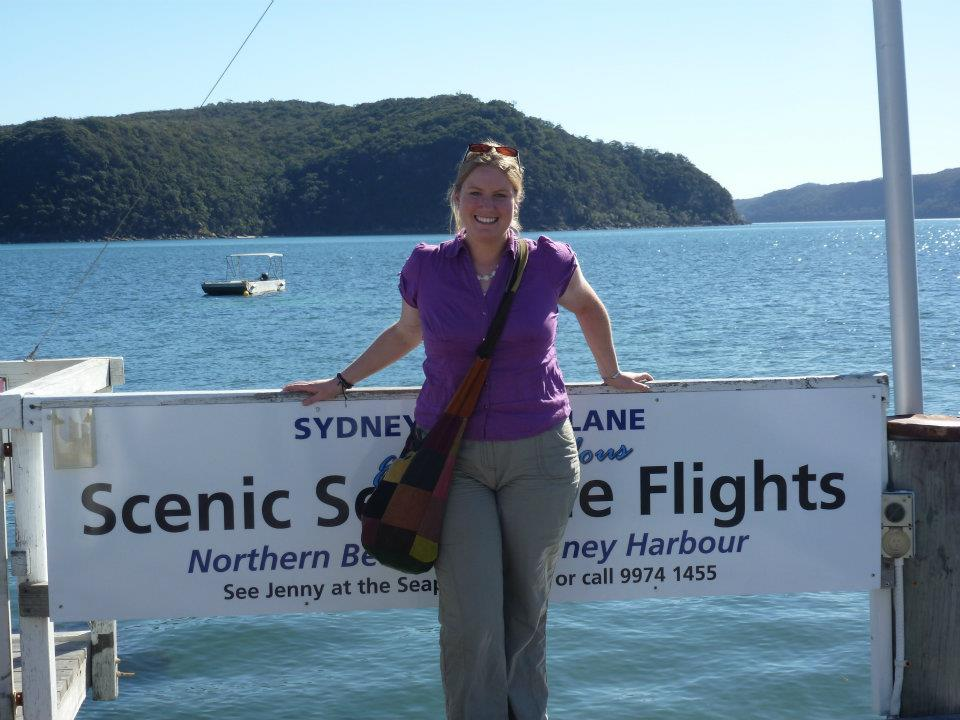
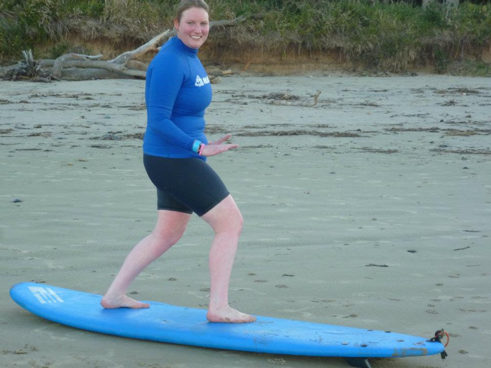
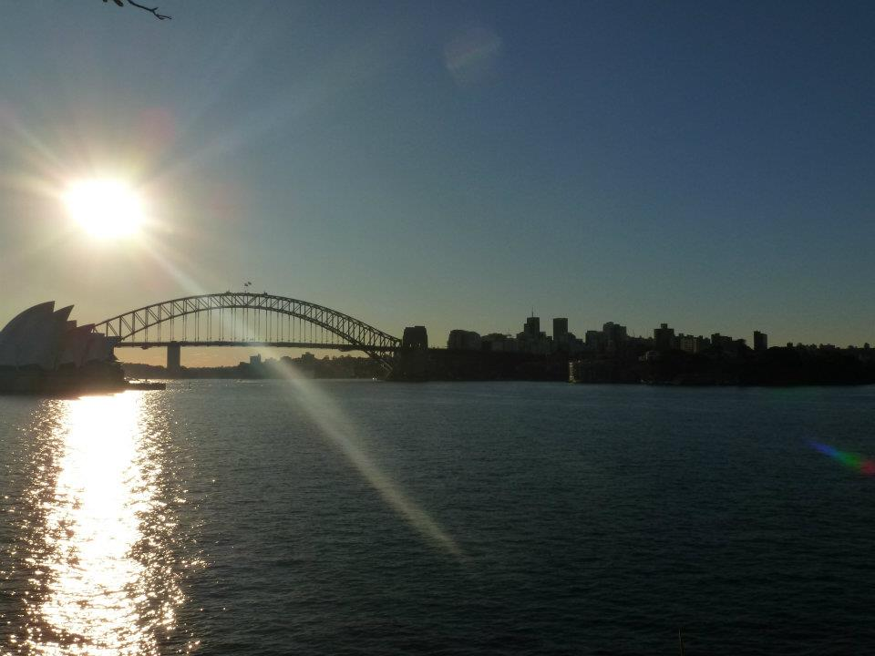
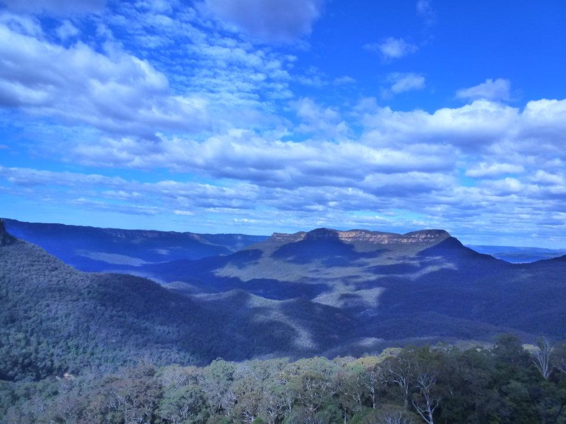
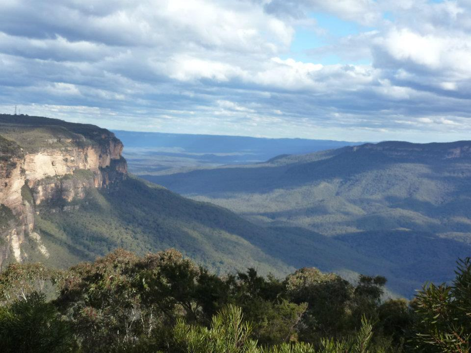
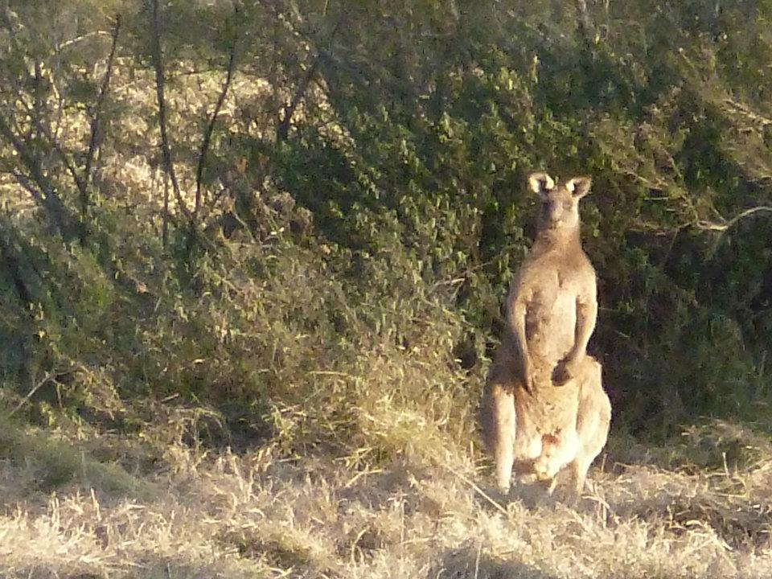

We finally made it to Australia — starting in Perth after flying from Singapore, then heading to Sydney to begin an unforgettable adventure. From Bondi Beach, Byron Bay and the Whitsundays to Palm Beach, Alice Springs and three brilliant nights at Uluru, this trip gave us sunshine, huge landscapes, iconic stops and some of the best memories we've ever made.
Sydney harbour, sunshine and that first proper taste of Australia
What this trip gave us:
The story
This was one of those trips that felt massive in every sense. Australia is the kind of place that makes you realise how small you are — not in a bad way, but in that brilliant travel way where every new stop feels bigger, brighter and wilder than you expected.
We began in Perth after flying in from Singapore and spent a few days settling into Australia properly. Then we flew to Sydney and started our tour, which gave us the perfect mix of iconic sights and beach time.
The East Coast side of the trip brought the beachy, postcard Australia you dream about — Bondi, Byron Bay and the Whitsundays all absolutely delivered. Then the Northern Territory changed the tone completely. Endless landscapes, red earth, huge skies and three nights at Uluru turned the trip into something far more memorable than just a beach holiday.
And yes — naturally — Palm Beach had to be included for the full Home and Away moment.
We also did a side trip to Tasmania — which completely caught us off guard and turned out to be one of the most jaw-dropping places we've ever been.
After Australia, we continued the adventure and headed on to New Zealand — which turned out to be one of the most visually incredible trips we've ever done.
That first proper arrival feeling — the Opera House, the harbour, the sunshine and the buzz of finally being in Australia.
Classic Australia. Beach time, ocean views and that laid-back atmosphere you hope Bondi will have — and it absolutely does.
Easy-going, sunny and full of that East Coast energy. One of those places that instantly makes you slow down and want to stay longer.
Exactly the kind of stop that makes you understand why people rave about Australia — water, islands and postcard views everywhere.
A must for Home and Away fans. Seeing the real-life setting was pure fun and one of those silly-but-brilliant travel moments.
The most unforgettable part of the whole trip. Three nights there gave us time to really take it all in — it felt genuinely special.
This is the tour that took us through the East Coast and into the Northern Territory — and it gave us one of our favourite trips ever.
For a country as huge as Australia, having the route, transport and the overall structure sorted made a massive difference. It meant we could focus on the fun parts — beaches, iconic stops, incredible scenery and soaking up each destination properly. If you want a big Australia trip without spending all your time trying to coordinate every leg yourself, this is a great way to do it.
Disclosure: This is an affiliate link. If you book through it we may earn a small commission at no extra cost to you.
Big city views and beach life
Sydney was the perfect place to kick things off properly. It has that rare thing some cities have where it instantly feels iconic the second you arrive. The harbour really is as beautiful as everyone says, and seeing the Opera House in real life was one of those travel moments that still sticks in our heads.
From there, the East Coast part of the trip gave us exactly the Australia we had imagined — beach time, blue skies and that easy-going atmosphere that makes you want to stay longer everywhere. Bondi gave us the famous beach vibe, Byron Bay brought the relaxed coastal energy, and the Whitsundays were every bit as beautiful as they look in the brochures.
It was the perfect balance of sightseeing and properly enjoying ourselves, rather than racing from one box-ticking stop to another.




The Home and Away stop
There was no way we were going all the way to Australia and not making the pilgrimage to Palm Beach. For anyone who grew up watching Home and Away, it is just one of those stops you have to do.
It was one of the most fun parts of the trip in a completely different way — less grand, more nostalgic, and a proper pinch-me moment because it felt so familiar from television.


Alice Springs and Uluru
The Northern Territory changed the whole mood of the trip — and that is exactly why we loved it.
After all the coastline and beach time, heading into the interior felt like stepping into a completely different Australia. Suddenly it was all about huge skies, long distances, red earth and that sense of openness you just do not get in Europe.
Alice Springs gave us that proper gateway-to-the-Outback feeling, and then Uluru completely lived up to the reputation. Spending three nights there made such a difference because it did not feel rushed. We got to experience the place properly, watch the light change at different times of day and just appreciate how extraordinary the landscape really is.
Some places are famous for a reason. Uluru is absolutely one of them.
Our guide to Alice Springs reel




Planning your own Australia trip? Browse activities, day trips and sightseeing experiences here:
Disclosure: If you book through these links we may earn a small commission at no extra cost to you.
Common questions
What to pack for Australia
Australia can mean long travel days, heat, beach stops and Outback landscapes all on the one trip. These are the things we'd pack without hesitation.
Handy for maps, bookings and staying connected across a huge country without relying on patchy Wi-Fi or expensive roaming.
View on Amazon →Essential in the heat, especially when you're moving around a lot or heading into drier areas like the Northern Territory.
View on Amazon →Useful for long days out, blisters, bites and all the little things that are annoying to buy on the go in a different country.
View on Amazon →Ideal for city days, beaches, coach travel and general exploring without dragging a big bag around all day.
View on Amazon →For long days taking photos, using maps and watching your battery disappear faster than expected.
View on Amazon →Australia uses Type I plugs — different to Ireland. Don't arrive on day one with nothing charged.
View on Amazon →The sun in Australia is no joke — especially out in the open landscapes. A proper hat makes sightseeing much more comfortable.
View on Amazon →Brilliant for staying cool while still feeling comfortable in the heat. Perfect for long coach days and warmer evenings.
View on Amazon →Absolutely essential. Between beaches and big open landscapes, you will use far more than you think. High SPF is a must.
View on Amazon →Keeps packing easy and makes hopping between stops much less chaotic — especially on a multi-stop trip like this.
Men's → Women's →Very worth having for warmer areas and evenings outdoors — particularly around water and in tropical parts of the country.
View on Amazon →Very handy if your trip includes dusty terrain around Uluru, viewpoints or any more rugged walking days in the national parks.
View on Amazon →Disclosure: These are Amazon affiliate links. If you buy through them we may earn a small commission at no extra cost to you. These are all things we'd genuinely pack for an Australia trip.
From Sydney and the East Coast to Alice Springs and Uluru, Australia is one of those trips that stays with you for years. Start with a tour that handles the logistics so you can enjoy the good parts properly.
Affiliate disclosure: if you book through our links we may earn a small commission at no cost to you. We only recommend trips and experiences we'd be happy to stand over.